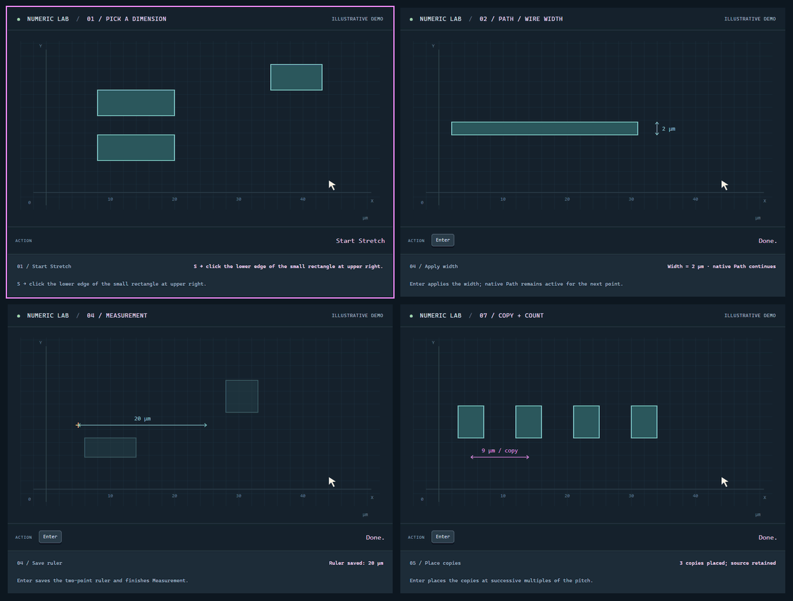

尺寸拾取
读取边长、Wire 宽度或平行边间距。
查看操作序列 ↗专为 VIRTUOSO LAYOUT 设计
精确，就在光标边。
尺寸可以从版图上量取，也可以直接输入。结果先显示在光标旁，确认后才写入当前命令。
一个小习惯，一次精确编辑
Num-Layout 跟随 Rectangle、Path、Wire、Measurement、Stretch、Move 和 Copy 的原有流程。量取或键入数值，确认后继续绘制。

尺寸拾取 → Path 宽度 → Measurement → Copy。交互版还包含 Stretch、Move、Contour 和 Steiner 清理。
九项小工具
在演示中打开任一工具，可以修改数值、调整速度，或逐步查看它对应的命令流程。
读取边长、Wire 宽度或平行边间距。
查看操作序列 ↗绘制 Path 或 Wire 时，直接设定整条路径的宽度。
查看操作序列 ↗一次输入宽高，实时预览矩形在当前象限的展开。
查看操作序列 ↗为新的两点标尺指定长度，方向由鼠标决定。
查看操作序列 ↗把选中的边调整到指定尺寸，对边保持不动。
查看操作序列 ↗按相对距离移动对象，或把参考点放到绝对坐标。
查看操作序列 ↗设置副本数和统一间距，所有 Step 目标先预览再放置。
查看操作序列 ↗以指定 pivot 为基准，把矩形向内或向外扩展。
查看操作序列 ↗删除版图中的不可见 Steiner 对象，保留已绘制的图形。
查看操作序列 ↗在 CIW 中加载
运行文件都在 nlayout/。在 Virtuoso
中加载主文件，工具栏和快捷键会自动装好。
nlayout/ 目录，包括显示资源和图标。
numeric_assist.il，或把这行写进本地
.cdsinit。
vbnUninstall() 会恢复之前的键位。
需要打包好的版本？下载最新 Release ↗，压缩包与 SHA1 校验文件一并提供。
查看安装说明 →load("/path/to/numeric-assist/nlayout/numeric_assist.il")
// J 数值输入
// Shift+J 绝对位置 / 轮廓
// N 复制数量尺寸可以从版图上拾取，也可以直接输入已知值。
洋红色预览会在确认前显示即将产生的变化。
数值输入融入原有绘制、编辑流程，不必来回切换命令。
先用合成几何试一遍全部工具，再把快捷键带进自己的 Layout 会话。
打开交互演示 →